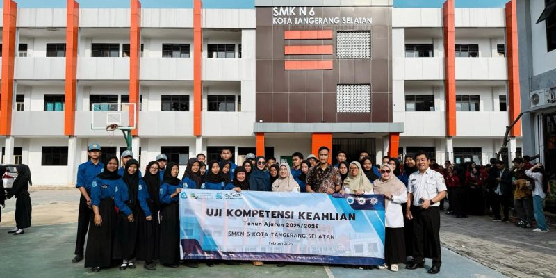
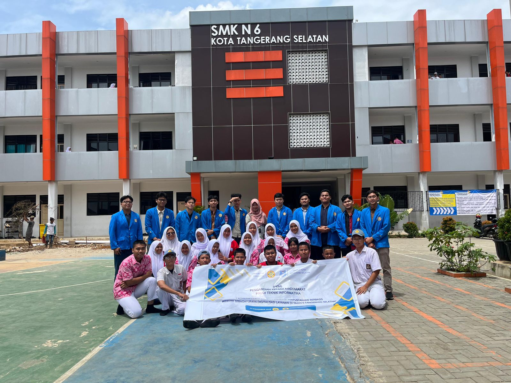
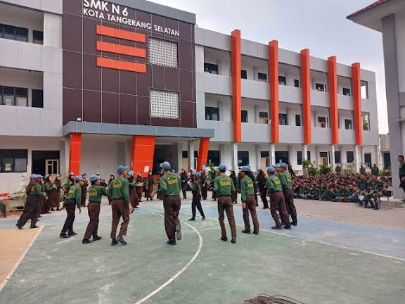
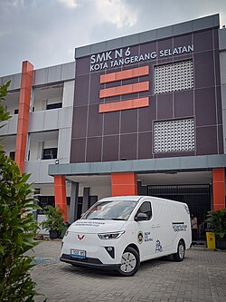

Detail Rapat
Hari/Tanggal: Senin, 30 November 2026
Waktu: 09.00 - 11.40 WIB
Tempat: Ruang RPS, Lantai 1 / Lab Broadcasting
Hitung Mundur Menuju Acara:
00 Hari :
00 Jam :
00 Mnt :
00 Dtk
Agenda Rapat
09.00 WIB
Pembukaan oleh Kepala Sekolah
09.15 WIB
Program & Kegiatan Sekolah selama satu semester/tahun ajaran
10.15 WIB
Kurikulum & Sistem Penilaian siswa di sekolah
11.00 WIB
Tata Tertib Sekolah, kedisiplinan, dan tingkat kehadiran siswa
11.25 WIB
Laporan Perkembangan Akademik dan perilaku siswa
11.40 WIB
Penutup dan Doa bersama
Galeri Kegiatan Sekolah
Dokumentasi fasilitas dan kegiatan di SMKN 6 Tangerang Selatan.




Yang Perlu Disiapkan
- Buku catatan dan bolpoin
- Kartu identitas atau kartu pelajar anak
- Berpakaian rapi dan sopan